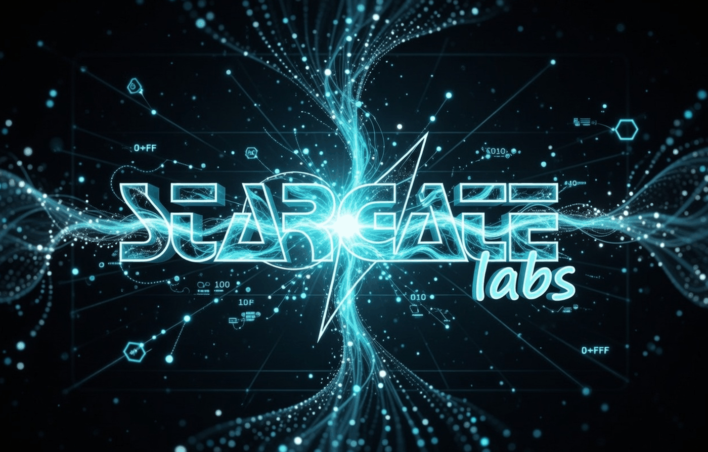
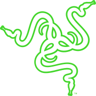
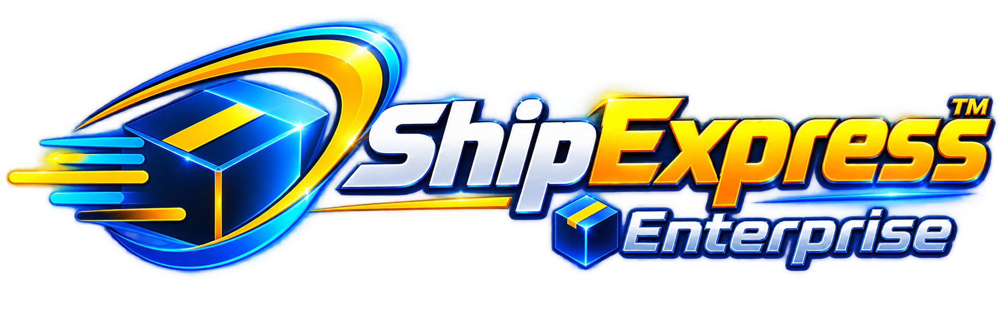
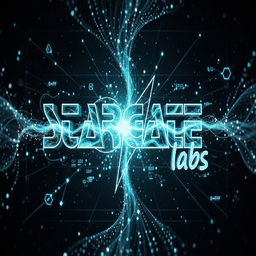

Stream Controller X
Effetti SignalRGB sui 15 tasti, con un’immagine continua a 480 × 288 pixel. Trasporto RGB565, trasferimenti per tile e test sull’intero framebuffer.
Stargate Labs è un laboratorio indipendente di sviluppo software e ricerca hardware. Realizzo applicazioni operative, strumenti di analisi e integrazioni per dispositivi con protocolli poco documentati. Il reverse engineering serve a comprendere il sistema e costruire un’interfaccia verificabile.

Un metodo da laboratorio: osservazione, analisi del protocollo, implementazione e test. Il codice pubblico è accompagnato da guide d’installazione e indicazioni sui limiti del collaudo.

Effetti SignalRGB sui 15 tasti, con un’immagine continua a 480 × 288 pixel. Trasporto RGB565, trasferimenti per tile e test sull’intero framebuffer.
Controllo della sezione RGB attraverso il protocollo locale della lampada: configurazione TCP, frame UDP e recupero della connessione. 77 controlli automatici.
Bridge Rust per luci Wi-Fi LSC e Battletron: login QR, stream LAN autenticato, gestione dei dispositivi e recupero della configurazione.
Progetti indipendenti, non affiliati ai produttori. Le verifiche di protocollo non equivalgono a una certificazione della sincronizzazione ottica. I dettagli di compatibilità sono documentati nelle singole repository.
Software in produzione e ricerca di laboratorio: ambiti diversi, con la stessa attenzione a dati, interfacce e comportamento operativo.

Piattaforma gestionale per spedizioni, ordini, magazzino e documenti. Architettura multi-tenant con database separati e integrazioni con i corrieri; strumenti di ricerca per consultare la documentazione operativa.
Apri progettoOrchestrazione di verifiche di sicurezza su target autorizzati: ricognizione, analisi statica e dinamica, dipendenze, credenziali esposte e API. I risultati dei diversi strumenti confluiscono in un flusso di analisi comune.
Progetto privato · descrizione pubblicaAssistente vocale con trascrizione Whisper, sintesi Kokoro e memoria documentale locale. Il routing delle richieste e le conferme sulle operazioni sensibili mantengono esplicito il confine tra conversazione ed esecuzione.
Progetto privato · descrizione pubblicaDashboard per controller Intel Cryo: regolazione, telemetria, diagnostica e storico. La build desktop integra clock Core Temp e sensori Thermaltake TF2/TF3; le soglie dipendono dall’impianto e i dati mancanti restano riconoscibili.
Apri progettoMonitoraggio di temperature CPU/GPU, carico, ventole, pompe e dischi. Una vista operativa dei sensori per correlare il comportamento del sistema con gli eventi termici e le condizioni del circuito.
Progetto privato · descrizione pubblicaProgettazione e collaudo di loop a liquido e sistemi termoelettrici. Il lavoro comprende acquisizione dei sensori, gestione della condensa, avvio controllato e documentazione dei limiti dell’hardware utilizzato.
Progetto privato · descrizione pubblicaRicostruisco flussi, formati e vincoli a partire da codice, traffico e comportamento osservabile. Le ipotesi restano distinte dalle prove.
Backup, riconnessioni, timeout e gestione dei dati mancanti fanno parte dell’implementazione, insieme alla funzionalità principale.
Test di protocollo, controlli di regressione e prove sul dispositivo rispondono a domande diverse. La documentazione chiarisce quale verifica sostiene ogni risultato.



Sviluppo software, integrazioni hardware e ricerca sui protocolli. Per approfondire un lavoro o valutare una collaborazione: